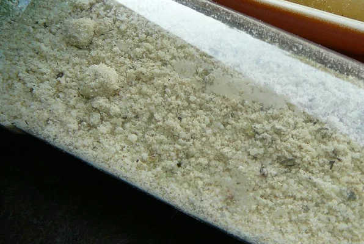

Prissy's Pizza Dust

Simple pizza dust seasoning!
Zesty and highly-aromatic pizza seasoning that makes your house smell like an Italian pizza parlor! Sprinkle this over pizza or tops of stromboli the last 10 minutes of baking time.
Ingredients
- 1 cup grated Parmesan cheese
- 1 teaspoon Italian seasoning
- 1 teaspoon poultry seasoning
- 1 teaspoon ground cumin
- 1/4 teaspoon garlic powder
Steps
- Stir the Parmesan cheese, Italian seasoning, poultry seasoning, cumin, and garlic powder together in a mixing bowl. Store in an airtight container in refrigerator up to 2 months.
- ENJOY!